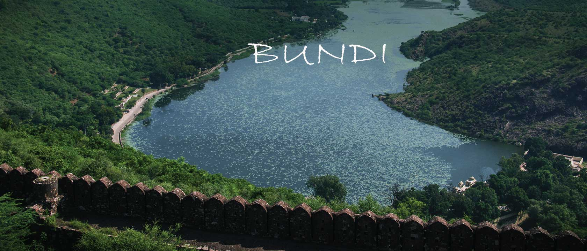
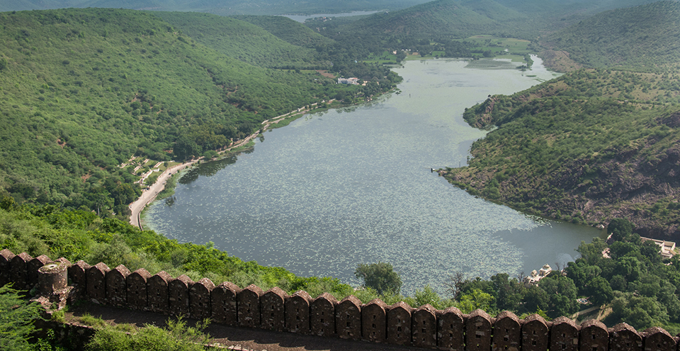

BUNDI
THE CITY OF STEPWELLS
It is popularly believed that Nobel laureate Rudyard Kipling penned part of his famous novel ‘Kim’ in Bundi. In fact, so impressed was he by the place, that this is what he wrote about the Bundi palace:
‘Jaipur Palace may be called the Versailles of India … Jodhpur’s House of strife, gray towers on red rock, is the work of giants, but the Palace of Bundi, even in broad daylight, is such a palace as men build for themselves in uneasy dreams – the work of goblins rather than of men.’
Bundi is a magnificent town located around 36 kilometres from Kota. Dotted with palaces and forts, the place has a fairy tale quality about it. Bundi’s charm lies in its location –surrounded by orchards of orange, guava, pomegranate and mango trees, flanked by the Aravalli range and rivers and lined by fields of cotton, barley and wheat. Situated far from the crowds, it is the simple rural folk that lend Bundi its allure.
Bundi was once ruled by the Hada Chauhans. Many historians claim that it was once the capital of the great Hadoti Kingdom, which was renowned for its art and sculpture. However, in 1624, Kota separated and became an independent state and this marked the beginning of the downfall of Bundi. Whether that may be, Bundi still retains its charismatic medieval grandeur. And just like Jodhpur and Rajput, the architecture of Bundi also possesses a noticeable bluish hue, designed to keep houses cool during hot summer, in the intricately carved brackets and pillars.
ATTRACTIONS & PLACES TO VISIT AND EXPLORE IN BUNDI

SUKH MAHAL
Sukh Mahal, a small, two-storied palace was a summer retreat of past rulers. Today, it is quite famous for being the place where Kipling wrote ‘Kim’. Many credit the palace as a having played muse to the renowned novel. In fact, part of a movie based on the novel was even shot here.

TARAGARH FORT
Built in 1345, Taragarh is one of the most impressive structures in Bundi. While it may be a bit ramshackle and strewn with overgrown vegetation, the palace grounds are a great place for a leisurely stroll. With its curved roofs topping pavilions, excess of temple columns and elephant and lotus motifs, the palace is a tribute to Rajput style.

84 PILLARED CENOTAPH
As the name suggests, the 84 Pillared Cenotaph is a structure supported by 84 columns. Commissioned by Rao Anirudh, the Maharaja of Bundi, this cenotaph is a tribute to his beloved wet nurse, Deva, who he loved dearly.

LAKE JAIT SAGAR
Located close to the Taragarh Fort, this picturesque lake is surrounded by hills and covered with pretty lotus flowers that bloom during winter and monsoon.
A popular tourist attraction, this impressive structure is decorated with carvings of deer, elephants and apsaras.

LAKE NAWAL SAGAR
Nawal Sagar Lake is an artificial lake that is a major tourist attraction and can even be seen from the Taragarh Fort. There is a half-submerged temple dedicated to Lord Varun Dev in its centre. What makes the lake unique is that one can see the reflection of nearby palaces and forts in its waters.

RAMGARH VISHDHARI SANCTUARY
Ramgarh Vishdhari Wildlife Sanctuary is located 45 kilometres from Bundi on the Bundi-Nainwa road. Covering an area of 252 sq. km., this sanctuary is home to a variety of flora and fauna. Established in 1982, it forms a buffer for Ranthambore National Park. The best time to visit is between September and May.